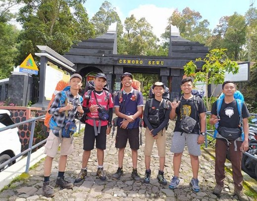

EKemah Bintang : Lawu Via Cemoro Sewu
25 - 27 September 2025
Gunung Lawu, Jawa Tengah
Deskripsi Kegiatan
Perkemahan Bintang di Gunung Lawu via Cemoro Sewu merupakan event
spesial yang menggabungkan kegiatan pendakian, edukasi alam, dan
malam refleksi di bawah langit penuh bintang. Gunung Lawu yang
berada di perbatasan Jawa Tengah dan Jawa Timur dikenal dengan aura
mistis sekaligus keindahan panoramanya. Jalur Cemoro Sewu dipilih
karena jalurnya yang menantang namun penuh pesona, cocok untuk
pendaki dengan semangat eksplorasi.
Rangkaian acara dimulai dengan registrasi dan pembekalan teknis di
pos pendakian, dilanjutkan dengan pendakian menuju area perkemahan
di pos 5. Setibanya di lokasi camp, peserta diajak mengikuti sesi
"Ngopi Langit", yaitu diskusi santai seputar konservasi dan filosofi
alam. Malam harinya, digelar Perkemahan Bintang, yaitu refleksi
malam dengan musik akustik, pemutaran video perjalanan, dan
observasi bintang menggunakan teleskop sederhana.
Keesokan harinya, kegiatan dilanjutkan dengan sunrise trip ke puncak
Hargo Dumilah, dilanjutkan dengan sesi dokumentasi dan penanaman
simbolik pohon kecil di jalur turun sebagai komitmen pelestarian
alam. Acara ditutup dengan sharing circle dan penyerahan sertifikat
partisipasi. Dengan konsep yang membumi dan menyentuh sisi spiritual
alam, Perkemahan Bintang menjadi perjalanan yang tidak hanya
melelahkan raga, tapi juga menyentuh jiwa.
Rangkaian Acara
- Hari 1: Registrasi peserta, pengenalan tim, briefing keselamatan
- Hari 2: Pendakian ke Gunung Lawu via Cemoro Sewu, simulasi evakuasi darurat
- Hari 3: Kegiatan tanam pohon dan penutupan
Fasilitas
- Transportasi dari basecamp
- Logistik dan makanan
- Asuransi peserta
- Kaos & sertifikat
R.A.P Open Trips
- Kuota :10 orang
- Guide : Sobat Aldi Hoky
- Biaya : 500k per-orang
- Kontak: +62 830 2345 6768
Dalam event ini R.A.P Outdoor membuka open trip yang akan dipandu langsung oleh pendaki profesional kami.